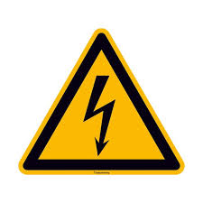
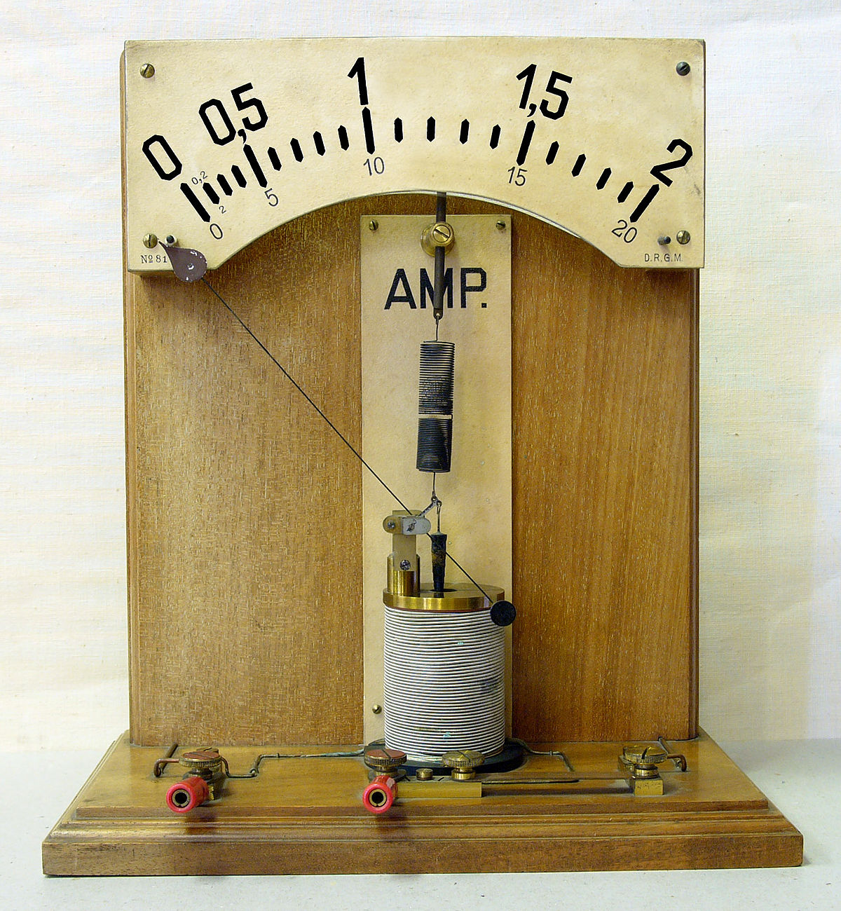

Others
This page can be used to showcase other electronic components or related information not covered in the main categories.

Breadboard
A breadboard is a tool used for prototyping electronic circuits. For more details Click here


What is voltage?
Voltage (also known as electric potential difference) is the measure of the electric potential energy per unit charge between two points in a circuit. It represents the driving force that pushes electric charges through a conductor. Voltage is measured in volts (V). To understand voltage, consider it as the "pressure" that pushes electric charges through a circuit. Higher voltage means more potential energy available to drive the current through the circuit. For example, a 12-volt battery provides a higher potential difference than a 1.5-volt battery. In summary, voltage is crucial for determining how much current flows in a circuit, according to Ohm's Law, which states that Voltage (V) = Current (I) × Resistance (R).
What is Ampere?
The ampere (often shortened to **amp**) is the SI unit of electric current. It measures the flow of electric charge through a conductor. Specifically, one ampere is defined as the flow of one coulomb of charge per second. In practical terms, it quantifies the rate at which electrical energy is transferred through a circuit. For example, if a circuit carries a current of 2 amps, it means 2 coulombs of charge are passing through any point in the circuit every second. The ampere is a fundamental unit in electrical engineering and is crucial for understanding and designing electrical systems.
<--Back